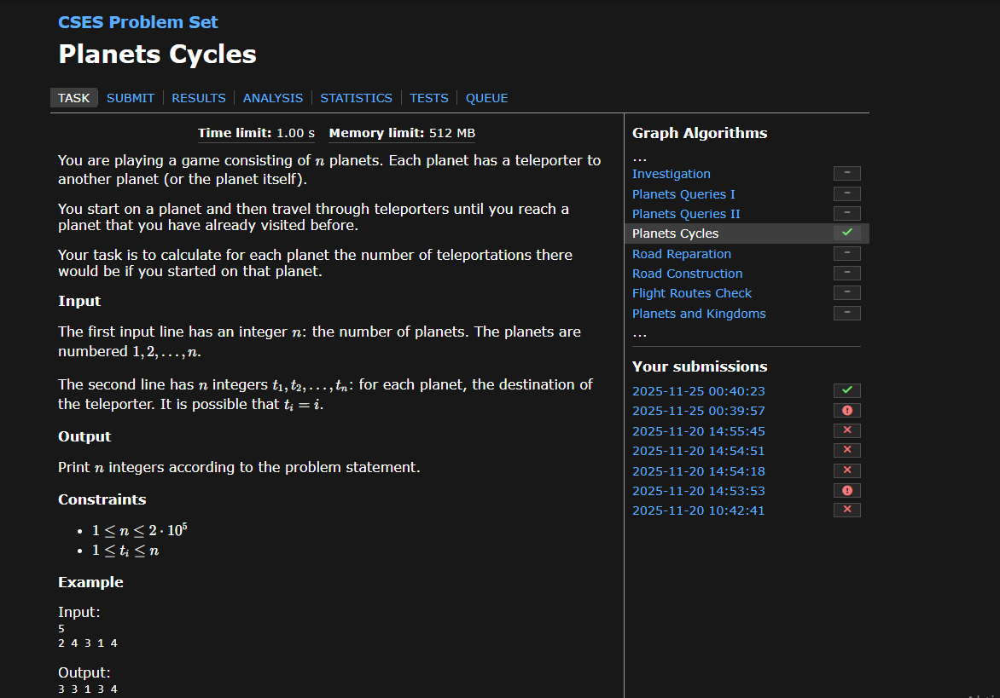

Planets Cycles
Feladat specifikáció
Time limit: 1.00 s | Memory limit: 512 MB
You are playing a game consisting of n planets. Each planet has a teleporter to another planet (or the planet itself).
You start on a planet and then travel through teleporters until you reach a planet that you have already visited before.
Your task is to calculate for each planet the number of teleportations there would be if you started on that planet.
Input
The first input line has an integer n: the number of planets. The planets are numbered 1, 2, ..., n.
The second line has n integers t_1, t_2, ..., t_n: for each planet, the destination of the teleporter. It is possible that t_i = i.
Output
Print n integers according to the problem statement.
Constraints
- 1 <= n <= 2 * 10^5
- 1 <= t_i <= n
Example
Input:
5
2 4 3 1 4
Implentáció
import java.io.BufferedReader;
import java.io.IOException;
import java.io.InputStreamReader;
import java.util.StringTokenizer;
import java.util.ArrayList;
public class Main {
public static void main(String[] args) throws IOException {
BufferedReader reader = new BufferedReader(new InputStreamReader(System.in));
int planetCount = Integer.parseInt(reader.readLine());
int[] teleporterDestinations = new int[planetCount];
StringTokenizer tokenizer = new StringTokenizer(reader.readLine());
for (int i = 0; i < planetCount; i++) {
teleporterDestinations[i] = Integer.parseInt(tokenizer.nextToken()) - 1;
}
int[] totalTeleportations = new int[planetCount];
boolean[] visitedPlanets = new boolean[planetCount];
int[] pathPositionMap = new int[planetCount];
for (int i = 0; i < planetCount; i++) {
if (!visitedPlanets[i]) {
ArrayList<Integer> currentTraversalPath = new ArrayList<>();
int currentPlanet = i;
while (!visitedPlanets[currentPlanet]) {
visitedPlanets[currentPlanet] = true;
pathPositionMap[currentPlanet] = currentTraversalPath.size();
currentTraversalPath.add(currentPlanet);
currentPlanet = teleporterDestinations[currentPlanet];
}
long lengthFromCollisionNode = 0;
int cycleLength = 0;
if (totalTeleportations[currentPlanet] != 0) {
lengthFromCollisionNode = totalTeleportations[currentPlanet];
for (int j = 0; j < currentTraversalPath.size(); j++) {
int planetInPath = currentTraversalPath.get(j);
totalTeleportations[planetInPath] = (int)(lengthFromCollisionNode + (currentTraversalPath.size() - j));
}
} else {
int cycleStartIndex = pathPositionMap[currentPlanet];
cycleLength = currentTraversalPath.size() - cycleStartIndex;
for (int j = cycleStartIndex; j < currentTraversalPath.size(); j++) {
int planetInCycle = currentTraversalPath.get(j);
totalTeleportations[planetInCycle] = cycleLength;
}
for (int j = 0; j < cycleStartIndex; j++) {
int planetLeadingToCycle = currentTraversalPath.get(j);
totalTeleportations[planetLeadingToCycle] = cycleLength + (cycleStartIndex - j);
}
}
}
}
StringBuilder outputBuilder = new StringBuilder();
for (int i = 0; i < planetCount; i++) {
outputBuilder.append(totalTeleportations[i]).append(" ");
}
System.out.println(outputBuilder);
}
}
Feltöltés
